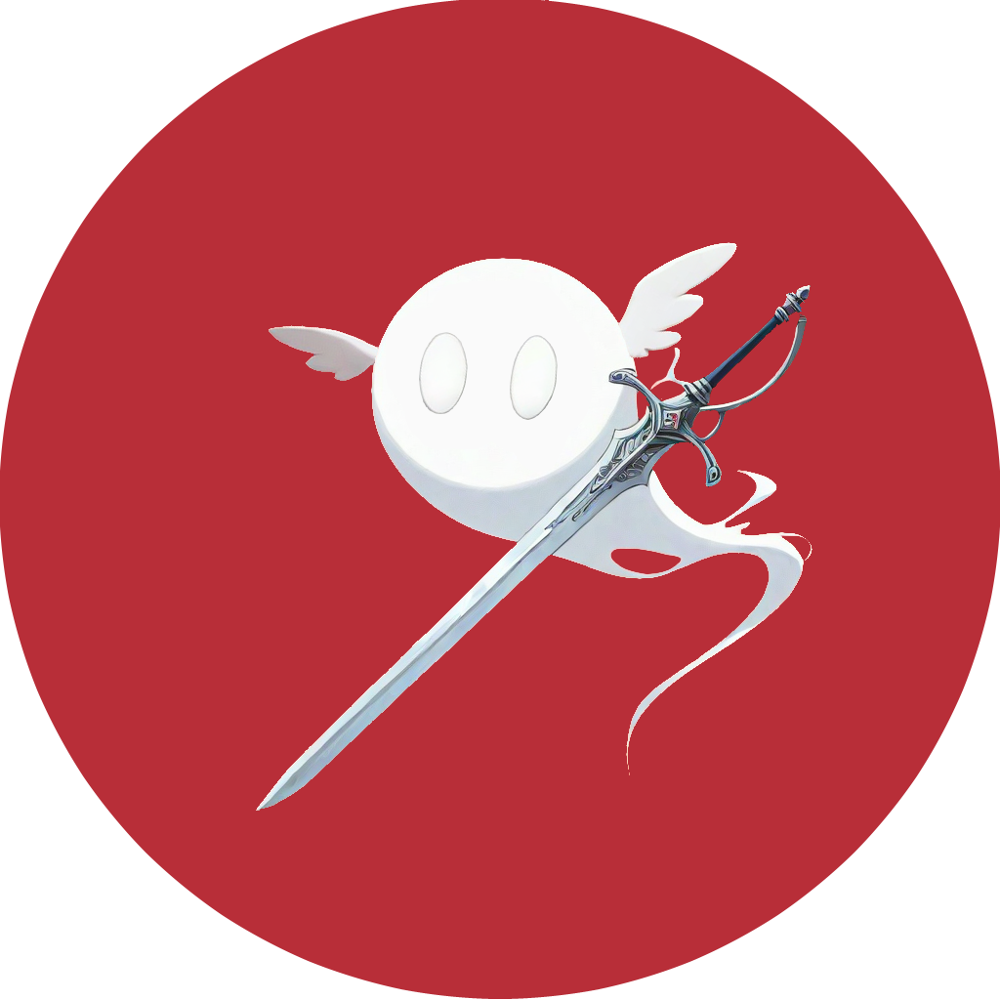

Contact the Creators
A two-man team that creates video games, art, and literature.

- Allyson Brickzin
- Online Identify: Callest
- email: callestduskmane@gmail.com
- Discord: Callest
- Instagram: Callest
- DeviantArt: Callest
- Since the age of 9, I have wanted a career in art. At the age of 12, I started writing stories as a way to escape reality, creating my own fantasy land and creatures, maybe a touch of horror to balance light and dark. I was always drawing in school and at home, inspired by the many cartoons I watched as a child and the old game consoles I played on. I graduated from high school and enrolled at a community college in 2008 to earn an Associate's degree in Graphic Design. I was unable to find a career and had very limited knowledge of technology, so I joined the U.S. Navy in May of 2011. While it was not the career I always wanted for myself, I also saw it as the closest I would ever come to being an actual hero, and I never regretted it. I have found the real me while serving, and broadened my knowledge on all my interests, become independent in all aspects of life, and was able to go back to school to pursue another degree in Computer Information Systems, now I'm graduating at the end of summer of 2026, and I taking my art and stories that have been locked in my head into playable videogames that I can share with others.
- Matthew McHenery
- Online Identify: StatusGear
- email: matthewmchenry@rocketmail.com
- Discord: StatusGear
- Instagram: m.c.henry
- DeviantArt: StatusGear
- I have two things that motivate me: 1. The pursuit of financial freedom to live comfortably with no worries, the type of freedom where I would be able to comfortably buy things without the need to look at my bank account and 2. To support my friends and family in the same pursuit to this financial freedom. I feel that my strength to be both flexible fast and resourcefulness matched with critical thinking to my environment has always played major roles into my success at life and it would not be any different here. Five years from now I will be starting my sea duty twilight tour in the Navy with 2 years left. Hopefully by then, I would want to be far more financially stable than I am now and have my future being built around my retirement back home to Florida. What I confirmed about myself is that my skills and desires still align up from when I had taken a similar assessment back in middle school. There wasn't any particular career suggestions that stood out as surprising mostly because they are still the same as they were back in middle school. The career I have researched is the still a Video Game Designer and the new details about it I like is to see how less of a niche kind of career it is, as more people are far technologically more inclined than they used to be back then. I'm a little surprised that it's still in demand and that not many who have been involved in the career have went down the idea route of incorporating the games with business, this makes it more feasible for me to pave the way towards where I want to align my career with.